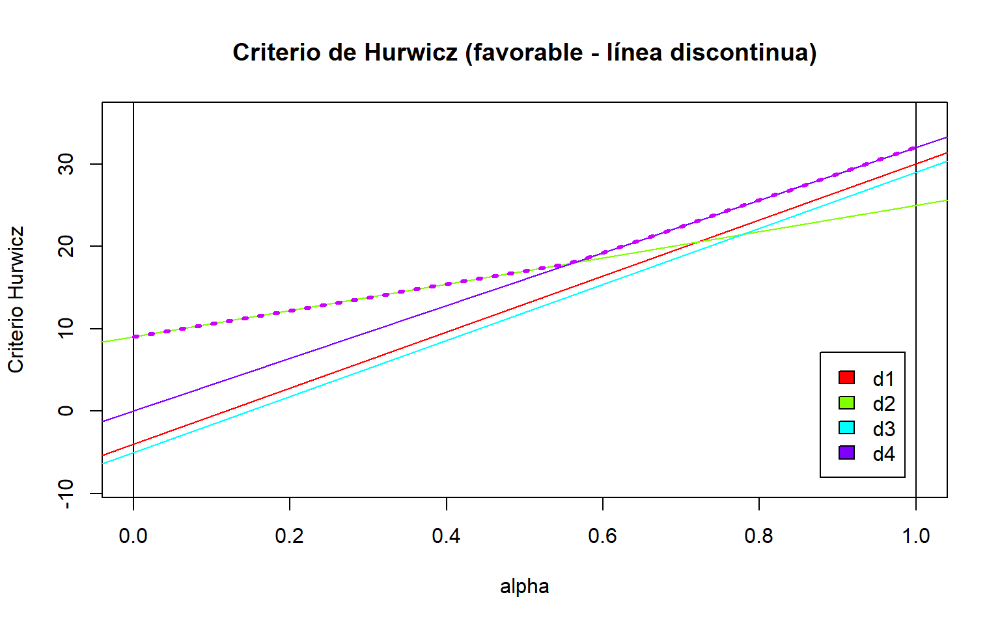
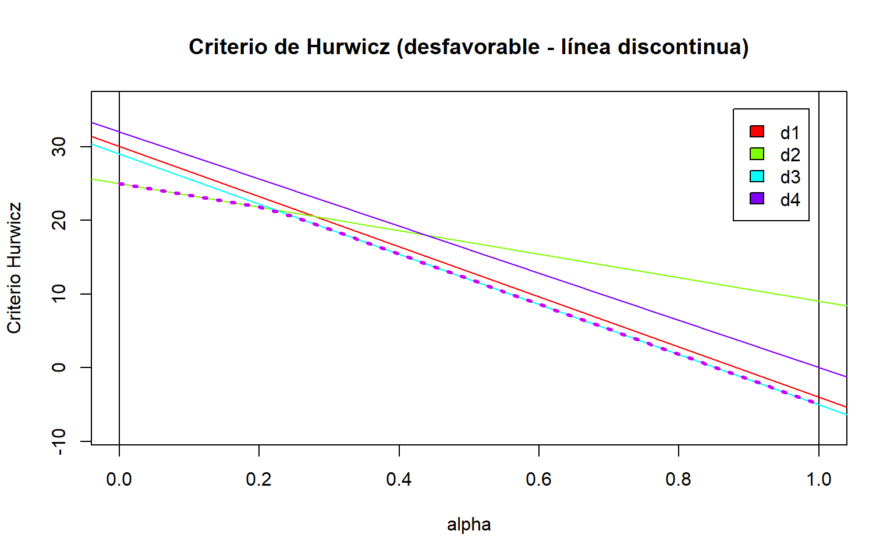

Un decisor debe elegir entre cuatro alternativas, \(d_1\), \(d_2\), \(d_3\) y \(d_4\), ante tres posibles estados de la naturaleza, \(e_1\), \(e_2\) y \(e_3\), cuyas probabilidades de ocurrencia son desconocidas.
La tabla de resultados es la siguiente:
Alternativa
\(e_1\)
\(e_2\)
\(e_3\)
\(d_1\)
5
9
12
\(d_2\)
16
22
15
\(d_3\)
1
14
17
\(d_4\)
8
21
29
Se estudiarán dos situaciones:
Situación favorable: los valores de la tabla representan beneficios, por lo que el objetivo será maximizar los resultados.
Situación desfavorable: los valores representan costes, por lo que el objetivo, en este caso, será minimizar los resultados.
Utilizando los criterios clásicos de decisión bajo incertidumbre (Wald, Optimista, Hurwicz, Savage, Laplace y Punto Ideal), y tomando un coeficiente de optimismo \(\alpha=0.5\) para el criterio de Hurwicz, se pide determinar cuáles de las siguientes afirmaciones son verdaderas.
En situación favorable, el criterio de Wald selecciona la alternativa \(d_2\).
En situación favorable, el criterio Optimista selecciona la alternativa \(d_3\).
Para un coeficiente de optimismo \(\alpha=0.5\), el criterio de Hurwicz selecciona la posición de mediapunta (\(d_3\)).
El criterio de Savage selecciona la misma alternativa óptima en ambas situaciones.
En situación desfavorable, los criterios de Laplace y Punto Ideal seleccionan la misma alternativa óptima.
Solución.
En primer lugar, introducimos la tabla de decisión en R utilizando la función crea.tablaX() del archivo teoriadecision_funciones_incertidumbre.R .
Se selecciona la alternativa con menor valoración.
Procedemos a calcular ambos casos utilizando la función criterio.Hurwicz() presente en el archivo anteriormente citado:
hurwicz_fav <-criterio.Hurwicz( X, alfa =0.5, favorable =TRUE)hurwicz_desfav <-criterio.Hurwicz( X, alfa =0.5, favorable =FALSE)tabla_hurwicz <-data.frame(Alternativa =rownames(X),Favorable =as.numeric(hurwicz_fav$ValorAlternativas),Desfavorable =as.numeric(hurwicz_desfav$ValorAlternativas))knitr::kable( tabla_hurwicz,col.names =c("Alternativa", "Favorable", "Desfavorable"),caption ="Valoraciones según el criterio de Hurwicz (alfa = 0.5)")
Valoraciones según el criterio de Hurwicz (alfa = 0.5)
Alternativa
Favorable
Desfavorable
d1
8.5
8.5
d2
18.5
18.5
d3
9.0
9.0
d4
18.5
18.5
En situación favorable, las alternativas óptimas son \(d_2\) y \(d_4\), porque ambas alcanzan la máxima valoración, igual a 18.5. Por tanto, se produce un empate entre ambas decisiones.
En situación desfavorable, la alternativa óptima es \(d_1\), ya que su valoración de 8.5 es la menor de todas.
Representación gráfica del criterio de Hurwicz
Vamos a representar gráficamente las valoraciones de Hurwicz para \(\alpha \in [0,1]\).
Situación favorable
dibuja.criterio.Hurwicz(X, favorable =TRUE)
Situación desfavorable
dibuja.criterio.Hurwicz(X, favorable =FALSE)
Interpretación de los gráficos
En el caso de situación favorable, la alternativa óptima depende del grado de optimismo. Para valores de \(\alpha\) más pequeños que 0.5 se selecciona \(d_2\), mientras que para valores superiores se selecciona \(d_4\). Cuando \(\alpha=0.5\), ambas alternativas presentan la misma valoración, por lo que son óptimas.
En situación desfavorable, la alternativa óptima es \(d_1\) para valores de \(\alpha\) inferiores a \(5/9\), mientras que para valores superiores es \(d_3\). Para \(\alpha=5/9\) ambas alternativas empatan.
Todo esto demuestra que la elección de la alternativa óptima puede cambiar en función del grado de optimismo del decisor.
Criterio de Savage
El criterio de Savage (también conocido como Minimax del arrepentimiento) selecciona la alternativa que minimiza el máximo arrepentimiento posible.
Para aplicarlo, se tiene que construir una matriz de arrepentimientos comparando cada resultado con el mejor valor de su correspondiente estado de la naturaleza.
Situación favorable
El arrepentimiento se calcula como:
\[
r_{ij}=\max_k x_{kj}-x_{ij}
\]
Situación desfavorable
El arrepentimiento se calcula como:
\[
r_{ij}=x_{ij}-\min_k x_{kj}
\]
En ambos casos se selecciona la alternativa que minimiza el máximo arrepentimiento:
\[
S=\min_i\left\{\max_j r_{ij}\right\}
\]
Calculo ambos casos utilizando la función criterio.Savage():
savage_fav <-criterio.Savage(X, favorable =TRUE)savage_desfav <-criterio.Savage(X, favorable =FALSE)# Matriz de arrepentimientos favorableknitr::kable( savage_fav$Pesos,caption ="Matriz de arrepentimientos en situación favorable")
Matriz de arrepentimientos en situación favorable
e1
e2
e3
d1
11
13
17
d2
0
0
14
d3
15
8
12
d4
8
1
0
# Matriz de arrepentimientos desfavorableknitr::kable( savage_desfav$Pesos,caption ="Matriz de arrepentimientos en situación desfavorable")
Matriz de arrepentimientos en situación desfavorable
e1
e2
e3
d1
4
0
0
d2
15
13
3
d3
0
5
5
d4
7
12
17
# Valoración de las alternativastabla_savage <-data.frame(Alternativa =rownames(X),Favorable =as.numeric(savage_fav$ValorAlternativas),Desfavorable =as.numeric(savage_desfav$ValorAlternativas))knitr::kable( tabla_savage,col.names =c("Alternativa", "Favorable", "Desfavorable"),caption ="Arrepentimiento máximo de cada alternativa")
Arrepentimiento máximo de cada alternativa
Alternativa
Favorable
Desfavorable
d1
17
4
d2
14
15
d3
15
5
d4
8
17
En situación favorable, la alternativa óptima es \(d_4\),porqueque presenta el menor arrepentimiento máximo, que es igual a 8.
En situación desfavorable, la alternativa óptima es \(d_1\), ya que presenta el menor arrepentimiento máximo, que es igual a 4.
Por tanto, el criterio de Savage selecciona alternativas diferentes en ambas situaciones.
Criterio de Laplace
El criterio de Laplace supone que todos los estados de la naturaleza son equiprobables. Por tanto, asigna la misma probabilidad a cada estado y calcula la media aritmética de los resultados de cada alternativa:
\[
L_i=\frac{1}{n}\sum_{j=1}^{n}x_{ij}
\]
En situación favorable se selecciona la alternativa con mayor media, mientras que en situación desfavorable se selecciona aquella que presenta la menor media.
Calculamos ambos casos utilizando la función criterio.Laplace():
laplace_fav <-criterio.Laplace(X, favorable =TRUE)laplace_desfav <-criterio.Laplace(X, favorable =FALSE)tabla_laplace <-data.frame(Alternativa =rownames(X),Favorable =as.numeric(laplace_fav$ValorAlternativas),Desfavorable =as.numeric(laplace_desfav$ValorAlternativas))knitr::kable( tabla_laplace,digits =3,col.names =c("Alternativa", "Favorable", "Desfavorable"),caption ="Valoración de las alternativas según el criterio de Laplace")
Valoración de las alternativas según el criterio de Laplace
Alternativa
Favorable
Desfavorable
d1
8.667
8.667
d2
17.667
17.667
d3
10.667
10.667
d4
19.333
19.333
En situación favorable, la alternativa óptima es \(d_4\), porque presenta la mayor media, con un valor aproximado de 19.333.
En situación desfavorable, la alternativa óptima es \(d_1\), debido a que presenta la menor media, con un valor aproximado de 8.667.
Criterio de Punto Ideal
El criterio de Punto Ideal consiste en construir un vector formado por los mejores resultados de cada estado de la naturaleza y seleccionar la alternativa cuya distancia euclídea a dicho punto sea mínima.
La distancia euclídea se calcula mediante:
\[
D_i=\sqrt{\sum_{j=1}^{n}(x_{ij}-x_j^*)^2}
\]
donde \(x_j^*\) representa el resultado ideal del estado \(e_j\).
Situación favorable
El punto ideal está formado por el máximo de cada columna de la tabla:
\[
I_F=(16,22,29)
\]
Situación desfavorable
El punto ideal está formado por el mínimo de cada columna:
\[
I_D=(1,9,12)
\]
Calculamos las distancias utilizando la función criterio.PuntoIdeal():
En situación favorable, la alternativa óptima es \(d_4\), ya que presenta la menor distancia al punto ideal, aproximadamente 8.062. En situación desfavorable, la alternativa óptima es \(d_1\), cuya distancia al punto ideal es 4. Por tanto, este criterio selecciona alternativas distintas según se consideren beneficios o costes.
Respuestas a las preguntas.
a) Verdadera. En situación favorable, Wald selecciona \(d_2\), ya que presenta el mayor de los mínimos, con un valor de 15.
b) Falsa. El criterio Optimista en situación favorable selecciona \(d_4\), y no \(d_3\), puesto que presenta el mayor resultado posible, igual a 29.
c) Verdadera. Para \(\alpha=0.5\), el criterio de Hurwicz presenta un empate entre \(d_2\) y \(d_4\) en situación favorable, ambas con valoración 18.5. En situación desfavorable selecciona \(d_1\), con valoración 8.5.
d) Falsa. El criterio de Savage selecciona \(d_4\) en situación favorable y \(d_1\) en situación desfavorable, por lo que las alternativas óptimas son distintas.
e) Verdadera. En situación desfavorable, tanto Laplace como Punto Ideal seleccionan la alternativa \(d_1\).
Luego, las afirmaciones verdaderas son a), c) y e).
Problema 2.
Enunciado.
El entrenador de un equipo de fútbol debe decidir en qué posición poner a jugar a un joven futbolista de su plantilla para el próximo partido. Se trata de un jugador capaz de desenvolverse en diferentes posiciones de ataque, pero cuyo rendimiento puede variar en función del planteamiento táctico del equipo rival.
Se contemplan cuatro alternativas:
\(d_1\): Extremo izquierdo. Jugar por la banda izquierda, tratando de generar ocasiones de gol desde esa zona.
\(d_2\): Extremo derecho. Desempeñar una función similar pero por la banda derecha.
\(d_3\): Mediapunta. Situarse por detrás del delantero, participando en la creación de jugadas de ataque.
\(d_4\): Segundo delantero. Jugar cerca del delantero, participando más directamente en las ocasiones de gol.
Sin embargo, el entrenador no conoce cómo planteará el partido el equipo contrario. Se consideran tres posibles estados de la naturaleza, según el estilo de juego del rival:
\(e_1\): Defensa cerrada. El rival acumula jugadores cerca de su portería, dejando pocos espacios para atacar.
\(e_2\): Presión alta. El rival intenta recuperar el balón cerca del área contraria, dificultando la salida del balón.
\(e_3\): Partido abierto. Ambos equipos disponen de espacios para atacar y se generan más oportunidades ofensivas.
A partir de las características del jugador, el entrenador ha estimado su posible rendimiento ofensivo en cada situación mediante una puntuación de 0 a 100, donde los valores más elevados indican un mejor rendimiento. Las valoraciones se recogen en la siguiente tabla:
Posición
\(e_1\)
\(e_2\)
\(e_3\)
\(d_1\): Extremo izquierdo
84
50
54
\(d_2\): Extremo derecho
71
73
69
\(d_3\): Mediapunta
61
79
83
\(d_4\): Segundo delantero
44
72
96
Nota: Como no se conocen las probabilidades de los distintos planteamientos del rival, el entrenador debe tomar una decisión bajo incertidumbre.
Considerando una situación favorable, en la que se pretende maximizar el rendimiento del jugador, se aplicarán los criterios de Wald, Optimista, Hurwicz, Savage, Laplace y Punto Ideal. Para el criterio de Hurwicz se utilizará un coeficiente de optimismo \(\alpha=0.5\).
Determina cuáles de las siguientes afirmaciones son verdaderas:
Según el criterio de Wald, la mejor opción es alinear al jugador como extremo derecho (\(d_2\)).
El criterio Optimista selecciona la posición de extremo izquierdo (\(d_1\)), ya que es la que permite alcanzar el mayor rendimiento posible.
Para un coeficiente de optimismo \(\alpha=0.5\), el criterio de Hurwicz selecciona la alternativa \(d_3\).
El criterio de Savage selecciona la misma alternativa que el criterio de Wald.
Los criterios de Laplace y Punto Ideal coinciden en seleccionar la posición de mediapunta (\(d_3\)).
Solución.
Primero introducimos en R la tabla de decisión con las valoraciones estimadas para cada posición del jugador y cada posible planteamiento táctico del equipo rival.
Y <-crea.tablaX(c(84, 50, 54,71, 73, 69,61, 79, 83,44, 72, 96),numalternativas =4,numestados =3)knitr::kable( Y,caption ="Tabla de decisión del problema 2")
Tabla de decisión del problema 2
e1
e2
e3
d1
84
50
54
d2
71
73
69
d3
61
79
83
d4
44
72
96
Aplicación de los criterios de decisión
Como las puntuaciones representan el rendimiento ofensivo estimado del jugador, nos encontramos ante una situación favorable, en la que se pretende maximizar los resultados.
Para resolver el problema se utiliza la función criterio.Todos(), que permite aplicar conjuntamente los seis criterios de decisión bajo incertidumbre. Para Hurwicz se considera un coeficiente de optimismo \(\alpha=0.5\).
resultados2 <-criterio.Todos( Y,alfa =0.5,favorable =TRUE)knitr::kable( resultados2,caption ="Resultados de los criterios de decisión del problema 2")
Resultados de los criterios de decisión del problema 2
e1
e2
e3
Wald
Optimista
Hurwicz
Savage
Laplace
Punto Ideal
Veces Optima
d1
84
50
54
50
84
67
42
62.67
51.04
0
d2
71
73
69
69
73
71
27
71.00
30.56
1
d3
61
79
83
61
83
72
23
74.33
26.42
4
d4
44
72
96
44
96
70
40
70.67
40.61
1
iAlt.Opt (fav.)
–
–
–
d2
d4
d3
d3
d3
d3
d3
Respuestas a las preguntas.
a) Verdadera. El criterio de Wald selecciona la alternativa \(d_2\) (extremo derecho), ya que presenta el mayor rendimiento mínimo, con una puntuación de 69.
b) Falsa. El criterio Optimista selecciona la alternativa \(d_4\) (segundo delantero), porque permite alcanzar el mayor rendimiento posible, con una puntuación de 96.
c) Verdadera. Para \(\alpha=0.5\), el criterio de Hurwicz selecciona la alternativa \(d_3\) (mediapunta), ya que presenta la mayor valoración, igual a 72.
d) Falsa. El criterio de Savage selecciona la alternativa \(d_3\) (mediapunta), mientras que Wald selecciona \(d_2\) (extremo derecho). Por tanto, ambos criterios no coinciden.
e) Verdadera. Los criterios de Laplace y Punto Ideal coinciden en seleccionar la alternativa \(d_3\) (mediapunta), que presenta el mayor rendimiento medio y la menor distancia al punto ideal respectivamente.
Por tanto, las afirmaciones verdaderas son a), c) y e).
Problema 3.
Enunciado.
Se considera un problema de decisión bajo incertidumbre con cuatro alternativas de decisión, \(d_1,d_2,d_3,d_4\), y tres posibles estados de la naturaleza, \(e_1,e_2,e_3\), cuya matriz de valores numéricos es la siguiente:
Alternativas
\(e_1\)
\(e_2\)
\(e_3\)
\(d_1\)
16
30
-4
\(d_2\)
25
17
9
\(d_3\)
24
29
-5
\(d_4\)
2
32
0
Se pide analizar el problema aplicando los criterios de decisión bajo incertidumbre estudiados (Wald, optimista, Savage, Laplace y Punto Ideal), considerando dos situaciones:
- Situación favorable: los valores de la matriz representan beneficios que se desean maximizar.
- Situación desfavorable: los valores representan costes netos que se desean minimizar.
Para el criterio de Hurwicz se utilizará un coeficiente de optimismo de \(\alpha=0.5\).
Solución.
Introducimos la matriz de decisión utilizando la función crea.tablaX().
Interpretación: El criterio de Wald adopta una actitud pesimista, considerando el peor resultado posible de cada alternativa. En este caso, la alternativa óptima es \(d_2\), pues presenta el mayor beneficio mínimo, igual a 9, siendo así la opción más favorable en el escenario más desfavorable.
Interpretación: El criterio Optimista considera únicamente el mejor resultado posible de cada alternativa, sin tener en cuenta los resultados desfavorables. En este caso, la alternativa óptima es \(d_4\), pues es la que puede alcanzar el mayor beneficio de toda la matriz (32).
Criterio de Hurwicz
Utilizamos un coeficiente de optimismo de \(\alpha=0.5\).
Interpretación: La alternativa óptima es \(d_2\), con una valoración de 17. Al utilizar \(\alpha=0.5\), se asigna el mismo peso al mejor y al peor resultado de cada alternativa.
Sin embargo, la decisión puede variar dependiendo del grado de optimismo del decisor. Para comprobarlo, representamos gráficamente cómo cambia la valoración de cada alternativa cuando \(\alpha\) toma valores entre 0 y 1.
dibuja.criterio.Hurwicz(tb01, favorable =TRUE)

Criterio de Hurwicz en situación favorable
Como podemos observar, cuanto menor es \(\alpha\), más pesimista es el criterio, hasta coincidir con el criterio de Wald cuando \(\alpha=0\). Por el contrario, al aumentar \(\alpha\), el criterio se vuelve más optimista, llegando a coincidir con el criterio Optimista cuando \(\alpha=1\).
Para determinar con mayor precisión los intervalos de \(\alpha\) en los que cada alternativa resulta óptima, utilizamos la siguiente función:
Interpretación: Este criterio selecciona la alternativa que minimiza el máximo arrepentimiento posible. Por eso, la alternativa óptima es \(d_1\), cuyo máximo arrepentimiento es 13.
Interpretación: Este criterio considera que todos los estados de la naturaleza son equiprobables. Por ello, la alternativa óptima es \(d_2\), con un beneficio medio de 17.
Interpretación: La alternativa óptima es \(d_3\), puesto que presenta la menor distancia euclídea respecto al punto ideal, formado por los mayores beneficios de cada estado de la naturaleza.
Situación desfavorable:
Consideramos ahora que los valores de la matriz representan COSTES, por lo que el objetivo es MINIMIZARLOS.
Interpretación: La alternativa óptima es \(d_3\), con una valoración de 12, al ponderar por igual el menor y el mayor coste posible de cada alternativa.
Representamos gráficamente cómo varía la decisión óptima en función de \(\alpha\), considerando ahora una situación desfavorable (COSTES).
dibuja.criterio.Hurwicz(tb01, favorable =FALSE)

Criterio de Hurwicz en situación desfavorable
Para conocer con mayor precisión los intervalos de \(\alpha\) en los que cada alternativa resulta óptima, utilizamos:
Interpretación: Para valores de \(\alpha\) inferiores a 0.222, la alternativa óptima es \(d_2\); para valores superiores, es \(d_3\). En el punto de corte ambas empatan. Por tanto, con \(\alpha=0.5\), seguimos eligiendo \(d_3\).
Interpretación: La alternativa óptima es \(d_4\), puesto que presenta la menor distancia euclídea respecto al punto ideal, formado por los menores costes de cada estado de la naturaleza.
Comparación de los resultados
Las alternativas óptimas obtenidas mediante los distintos criterios son:
Criterio
Favorable
Desfavorable
Wald
\(d_2\)
\(d_2\)
Optimista
\(d_4\)
\(d_3\)
Hurwicz (\(\alpha=0.5\))
\(d_2\)
\(d_3\)
Savage
\(d_1\)
\(d_1\)
Laplace
\(d_2\)
\(d_4\)
Punto Ideal
\(d_3\)
\(d_4\)
Los resultados muestran que la elección de la alternativa óptima depende del criterio utilizado y de si los valores se interpretan como beneficios o como costes.
En situación favorable, la alternativa que más veces ha sido recomendada es \(d_2\), seleccionada por tres criterios: Wald, Hurwicz y Laplace.
En situación desfavorable, las decisiones se reparten entre las cuatro alternativas.
Por tanto, no existe una única alternativa recomendada por todos los métodos, lo que pone de manifiesto la importancia de la actitud y postura del decisor ante la incertidumbre.
Preguntas de selección múltiple
De acuerdo con los resultados obtenidos al aplicar los distintos criterios de decisión bajo incertidumbre, seleccione todas las afirmaciones verdaderas y justifique cada respuesta, explicando por qué es verdadera o falsa.
En situación favorable, el criterio de Wald selecciona la alternativa \(d_2\).
En situación favorable, los criterios Optimista y de Hurwicz, con \(\alpha=0.5\), seleccionan la misma alternativa.
El criterio de Savage selecciona la alternativa \(d_1\) tanto en situación favorable como desfavorable.
En situación desfavorable, el criterio de Laplace selecciona la alternativa \(d_2\).
El criterio del Punto Ideal selecciona alternativas diferentes en las situaciones favorable y desfavorable.
Solución:
a) Verdadera. En situación favorable, el criterio de Wald selecciona la alternativa \(d_2\), ya que su beneficio mínimo es 9, el mayor de los mínimos de todas las alternativas (‘maxmin’). Por tanto, es la opción que ofrece el mejor resultado en el escenario más desfavorable.
b) Falsa. El criterio Optimista selecciona \(d_4\), puesto que alcanza el mayor beneficio posible, igual a 32. Sin embargo, el criterio de Hurwicz, con \(\alpha=0.5\), selecciona \(d_2\), cuya valoración es 17. Por tanto, ambos criterios no coinciden.
c) Verdadera. El criterio de Savage selecciona \(d_1\) en ambas situaciones, ya que es la alternativa que minimiza el máximo arrepentimiento. En situación favorable, su máximo arrepentimiento es 13, mientras que en situación desfavorable es 14.
d) Falsa. En situación desfavorable, el criterio de Laplace selecciona \(d_4\), ya que presenta el menor coste medio, aproximadamente igual a 11.33. En cambio, \(d_2\) tiene un coste medio de 17, por lo que no resulta óptima.
e) Verdadera. El criterio del Punto Ideal selecciona \(d_3\) en situación favorable y \(d_4\) en situación desfavorable, puesto que son las alternativas que presentan la menor distancia euclídea respecto al punto ideal de cada situación.
Por tanto, las afirmaciones verdaderas son a), c) y e).
Problema 4: Expansión internacional de una empresa de jamón ibérico
Enunciado.
Una empresa española dedicada a la producción y comercialización de jamón ibérico está estudiando la posibilidad de expandirse internacionalmente, introduciendo sus productos en un nuevo mercado.
Tras analizar diferentes posibilidades, la empresa ha seleccionado cuatro países candidatos: Francia, Alemania, México y Japón. Sin embargo, desconoce cuál será la demanda de sus productos durante el primer año, por lo que contempla tres posibles estados de la naturaleza: demanda baja, moderada o alta.
Los beneficios netos estimados para el primer año, una vez descontados los costes previstos de producción, transporte, distribución y comercialización, se recogen en la siguiente matriz (valores hipotéticos expresados en miles de euros):
Alternativas
\(e_1\)
\(e_2\)
\(e_3\)
\(d_1\): Francia
16
30
44
\(d_2\): Alemania
22
27
35
\(d_3\): México
-6
24
60
\(d_4\): Japón
-12
20
74
Donde:
\(e_1\): demanda baja.
\(e_2\): demanda moderada.
\(e_3\): demanda alta.
Los valores negativos representan posibles pérdidas económicas durante el primer año.
¿En qué país debería introducir sus productos la empresa?
Para responder a esta cuestión, se pide aplicar los criterios de decisión bajo incertidumbre estudiados en la asignatura mediante la función conjunta de R. Se utilizará un coeficiente de optimismo de \(\alpha=0.5\) para el criterio de Hurwicz.
Resolución.
En este problema nos encontramos ante una situación favorable, pues la matriz representan BENEFICIOS NETOS y, por tanto, nuestro objetivo es MAXIMIZARLOS.
Introducimos la matriz de decisión utilizando la función crea.tablaX():
Demanda baja Demanda moderada Demanda alta
Francia 16 30 44
Alemania 22 27 35
Mexico -6 24 60
Japon -12 20 74
A continuación, aplicamos conjuntamente todos los criterios de decisión bajo incertidumbre mediante la función criterio.Todos(), utilizando un coeficiente de optimismo de \(\alpha=0.5\).
criterio.Todos(tb02, alfa =0.5, favorable =TRUE)
Demanda baja Demanda moderada Demanda alta Wald Optimista
Francia 16 30 44 16 44
Alemania 22 27 35 22 35
Mexico -6 24 60 -6 60
Japon -12 20 74 -12 74
iAlt.Opt (fav.) -- -- -- Alemania Japon
Hurwicz Savage Laplace Punto Ideal Veces Optima
Francia 30.0 30 30.00 30.59 2
Alemania 28.5 39 28.00 39.12 1
Mexico 27.0 28 26.00 31.87 1
Japon 31.0 34 27.33 35.44 2
iAlt.Opt (fav.) Japon Mexico Francia Francia Francia,Japon
Interpretación de los resultados
Criterio de Wald: Tomando la postura pesimista, la opción óptima es Alemania, pues garantiza el mayor beneficio mínimo, igual a 22.000 €. Es, por tanto, el país que ofrece mayor seguridad ante un escenario de demanda baja.
Criterio Optimista: Siendo optimistas, la mejor opción sería Japón, ya que podría alcanzar el mayor beneficio de toda la matriz, igual a 74.000 €, si la demanda fuese alta. Sin embargo, también presenta la mayor pérdida potencial, por lo que se trata de una alternativa muy arriesgada.
Criterio de Hurwicz: Utilizando \(\alpha=0.5\), la opción óptima es Japón, con una valoración de 31.000 €, ligeramente superior a la de Francia (30.000 €).
Criterio de Savage: La opción óptima es México, cuyo arrepentimiento máximo es de 28.000 €, el menor entre los cuatro países.
Criterio de Laplace: Considerando todos los estados de la naturaleza equiprobables, se calcula el beneficio medio de cada alternativa. En este caso, la opción óptima es Francia, con un beneficio medio de 30.000 €, superior al de los demás países.
Criterio del Punto Ideal: La alternativa óptima es Francia, cuya distancia al punto ideal es aproximadamente 30,59, la menor de las cuatro alternativas.
Conclusión
Los resultados muestran que la decisión depende del criterio utilizado y, por tanto, de la actitud de la empresa frente a la incertidumbre. Francia y Japón son los países recomendados por un mayor número de criterios, con dos recomendaciones cada uno.
Alemania sería la opción más adecuada para una empresa especialmente conservadora, mientras que Japón resultaría atractivo para una empresa dispuesta a asumir mayores riesgos con el objetivo de obtener beneficios elevados.
Por otro lado, México sería la alternativa recomendada si la empresa desea minimizar el máximo arrepentimiento, mientras que Francia destacaría al considerar los beneficios medios o la proximidad al punto ideal.
Así que para este caso, no existe una única alternativa recomendada por todos los criterios, y la decisión final dependerá de las preferencias y de la actitud de la empresa ante la incertidumbre.
Preguntas de selección múltiple
De acuerdo con los resultados obtenidos al aplicar los distintos criterios de decisión bajo incertidumbre, seleccione todas las afirmaciones verdaderas y justifique cada respuesta, explicando por qué es verdadera o falsa.
El criterio de Hurwicz, con un coeficiente de optimismo de \(\alpha=0.5\), recomienda introducir los productos en Francia.
Según el criterio de Wald, Alemania es el país recomendado, ya que presenta el mayor beneficio mínimo.
El criterio de Laplace recomienda Japón, puesto que es el país que puede alcanzar el mayor beneficio posible.
Según el criterio de Savage, México es la alternativa que minimiza el máximo arrepentimiento.
El criterio del Punto Ideal recomienda Francia, al presentar la menor distancia euclídea respecto al punto ideal.
Solución:
a) Falsa. Con \(\alpha=0.5\), el criterio de Hurwicz selecciona Japón, cuya valoración es de 31.000 €, mientras que Francia obtiene 30.000 €. Por tanto, Francia no resulta óptima según este criterio.
b) Verdadera. El criterio de Wald selecciona Alemania, ya que su beneficio mínimo es de 22.000 €, superior al beneficio mínimo de los demás países. Por tanto, es la alternativa que garantiza el mejor resultado en el escenario más desfavorable.
c) Falsa. El criterio de Laplace selecciona Francia, que presenta el mayor beneficio medio, igual a 30.000 €. Japón es la alternativa elegida por el criterio Optimista, al alcanzar el mayor beneficio posible (74.000 €), pero su beneficio medio es inferior al de Francia.
d) Verdadera. El criterio de Savage selecciona México, ya que su máximo arrepentimiento es de 28.000 €, el menor de las cuatro alternativas.
e) Verdadera. El criterio del Punto Ideal selecciona Francia porque presenta la menor distancia euclídea respecto al punto ideal, formado por los mayores beneficios de cada estado de la naturaleza.
Por tanto, las afirmaciones verdaderas son b), d) y e).